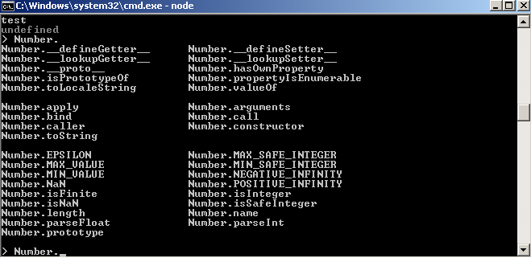
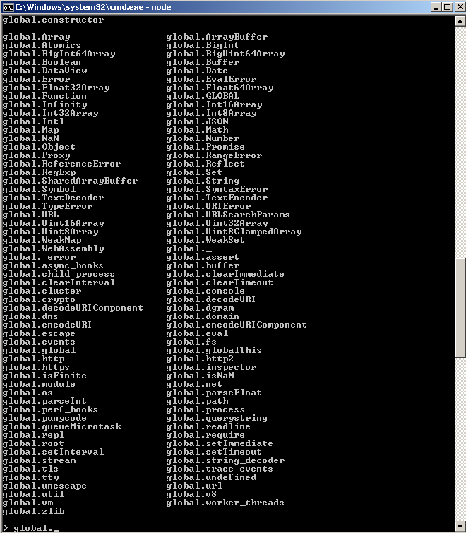

9. REPL
Команда node используется для запуска Node.js-скриптов:
node script.js
Если мы опустим имя файла, то попадем в режим REPL:
node
REPL (Run Evaluate Print Loop, цикл "чтение-вычисление-вывод") - это среда выполнения кода (обычно, окно терминала), которая принимает выражение, введенное пользователем, и возвращает результат вычисления этого выражения.
Если вы введете node в терминале, произойдет следующее:
>
Терминал перейдет в режим ожидания.
Если быть более точным, терминал в данном случае ожидает ввода какого-либо JavaScript-кода.
Введем следующее:
> console.log('test')
test
undefined
>
Первое значение, test, это то, что мы велели вывести в консоль, затем мы получаем undefined - значение, которое вернуло выполнение console.log()
После этого мы можем ввести что-нибудь еще.
Использование tab для автозавершения
REPL является интерактивным.
Если нажать tab при написании кода, REPL попытается завершить написанное, выбирая из определенных ранее или предопределенных переменных.
Объекты JavaScript
Попробуйте ввести название JavaScript-класса, например, Number, добавьте к нему точку и нажмите tab.
REPL покажет все свойства и методы данного класса:

Глобальные объекты
Вы можете получить список глобальных объектов, введя global. и нажав tab:

Специальная переменная _
Если в конце кода набрать _, будет выведен результат выполнения последней операции.
Команды после точки
REPL содержит некоторые специальные команды, начинающиеся с точки. Вот они:
- .help - показывает список доступных команд
- .editor - включает режим редактирования для написания многострочного JavaScript-кода. Для выполнения кода в этом режиме необходимо нажать ctrl-D
- .break - прекращает ввод многострочного кода. Аналогично нажатию ctrl-C
- .clear - сбрасывает контекст REPL к пустому объекту, удаляет весь введенный код
- .load - загружает JavaScript-файл, находящийся в текущей (рабочей) директории
- .save - сохраняет сессию REPL в файл с указанным именем
- .exit - выход из REPL. Аналогично двойному нажатию ctrl-C
REPL понимает, что вы вводите многостроный код без вызова .editor.
Например, если вы начали реализовывать итерацию:
[1, 2, 3].forEach(num => {
и нажали enter, REPL перейдет на новую строку с тремя точками в начале, сообщая, что вы можете продолжить работу с блоком кода:
... console.log(num)
... })
Если вы введете .break в конце, режим набора многострочного кода остановится и выражение не будет выполнено.